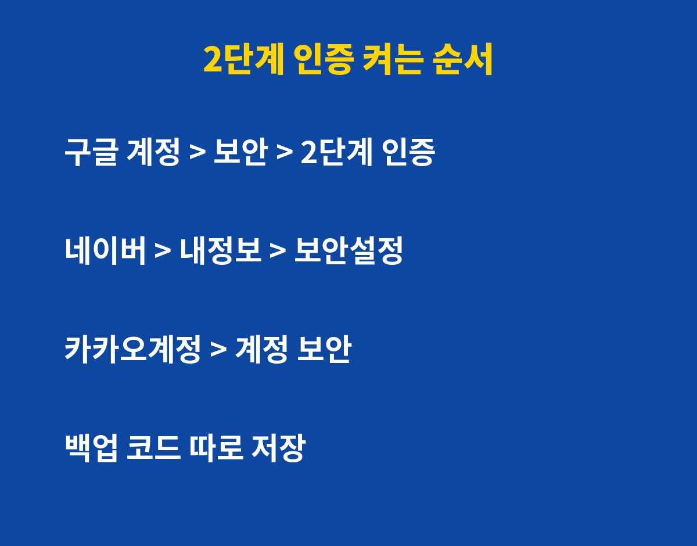
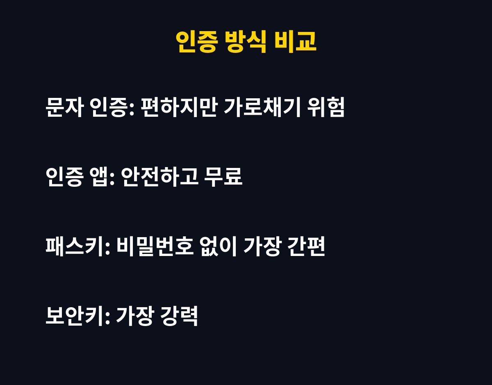

2단계 인증을 켜두면 비밀번호가 유출돼도 계정 탈취를 크게 막을 수 있어요. 설정은 보통 3분이면 끝나요.
구글·네이버·카카오 계정을 쓰고 있다면 꼭 확인해 보세요. 그런데 잘못 켜면 오히려 내 계정에 못 들어가는 일이 생길 수 있어요. 이유는 아래에 있어요.
비밀번호 하나로만 지키는 계정은 유출된 비밀번호 한 번이면 그대로 뚫려요. 다른 사이트에서 같은 비밀번호를 쓰고 있다면 더 위험하죠.
2단계 인증은 비밀번호 다음에 한 번 더 확인하는 장치예요. 비밀번호를 알아낸 사람도 내 폰이 없으면 로그인할 수 없어요.

구글은 계정 관리의 보안 메뉴에서 2단계 인증을 선택하면 돼요. 네이버는 내정보의 보안설정에서 2단계 인증을 켤 수 있어요. 카카오는 카카오계정의 계정 보안 메뉴에서 설정해요.
메뉴 이름은 앱 업데이트로 조금씩 바뀔 수 있으니, 검색창에 '2단계 인증'을 입력하면 가장 빨라요.
| 방식 | 편의성 | 안전성 |
|---|---|---|
| 문자 인증 | 높음 | 보통 |
| 인증 앱 | 보통 | 높음 |
| 패스키 | 매우 높음 | 높음 |
| 보안키 | 낮음 | 매우 높음 |
처음이라면 문자 인증으로 시작하고, 익숙해지면 인증 앱이나 패스키로 바꾸는 걸 추천해요.

폰을 잃어버리거나 번호를 바꾸면 로그인이 막힐 수 있어요. 그래서 백업 코드를 꼭 따로 저장해 두세요. 종이에 적거나 안전한 곳에 보관하면 돼요.
복구용 이메일과 전화번호도 최신으로 바꿔 두세요. 이 두 가지만 챙기면 2단계 인증은 부담 없이 쓸 수 있어요.
오늘 3분만 투자해서 가장 중요한 계정부터 켜 보세요. 도움이 됐다면 구독해 두시면 생활 IT 꿀팁을 놓치지 않아요.
기사·공식 발표 기준이며 출시·가격 정보는 바뀔 수 있어요.